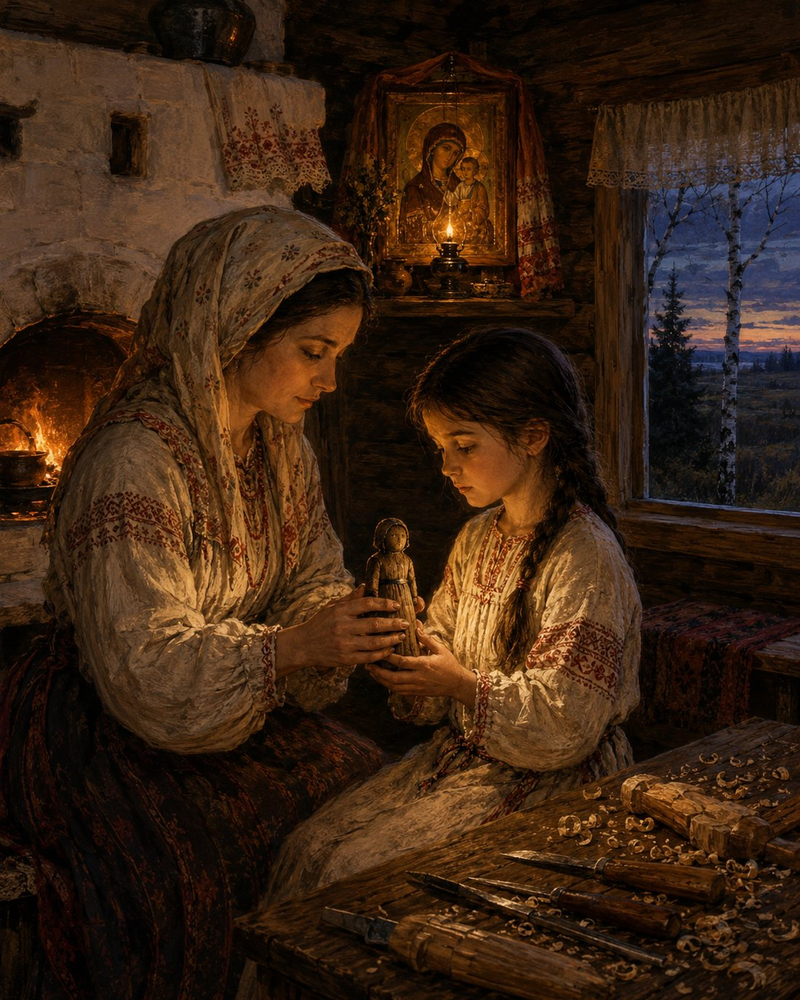
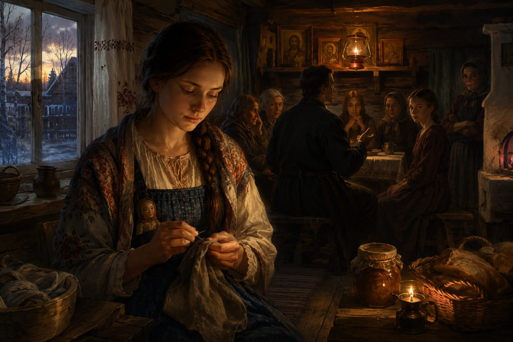
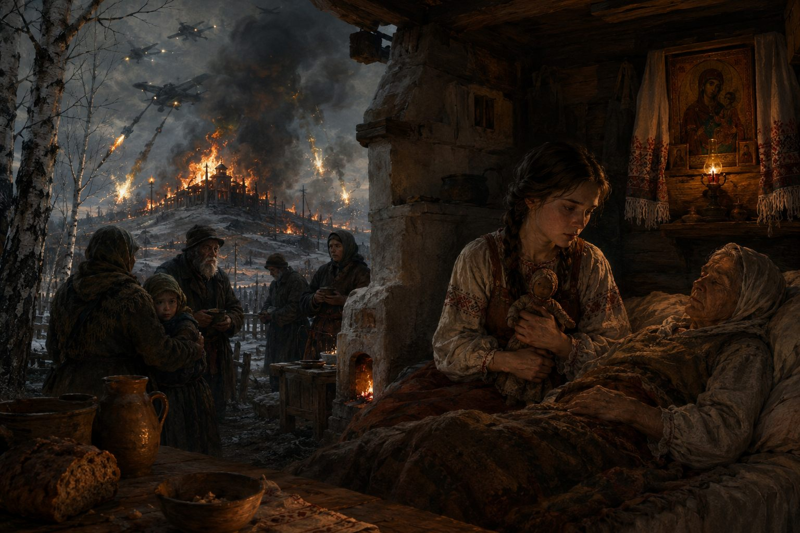
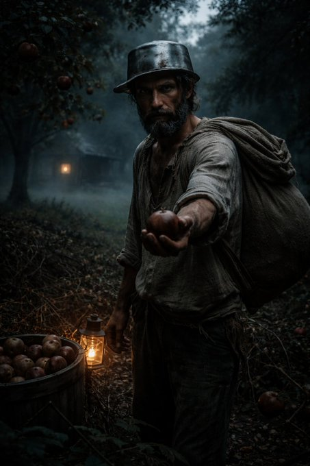
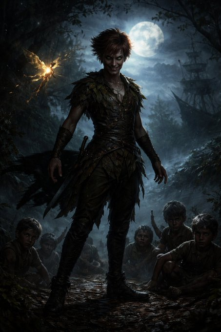

Short stories & fairy tales.
Shorter pieces, gathered by their shared characters and themes — four tales in the life of Vasilisa, three Faerie-court verdicts, a trio of threshold-guardian tales, and a look past the folktale into science fiction and cosmic horror. Click a title to read it.
-
Slavic folklore
The Vasilisa Tales
The life of a border-village woodworker’s daughter, told in sequence — the quiet flame first lit, then carried out among her neighbours, then kept burning through the war that changes the land, and at last carried down a scorched road for water that can ease but not undo.
-

Fairy tale · Slavic folklore · July 2026The Quiet Flame of Vasilisa
On the edge of forest and steppe, a woodworker's daughter learns mending from her father, the old songs and prayers from her mother, and is given a doll that listens — the quiet beginning of one who will one day be called by another name.
1. The Doll That Listened
In a certain village that stood where the deep forest met the open steppe, there lived a family in a small izba of dark timber. Birch trees leaned close to the walls, and in summer the wind carried the smell of grass from the wide land and the cooler breath of the woods. In the beautiful corner of the house, above a clean shelf, hung an icon of the Mother of God with a thin lampada that the mother lit each evening. The Domovoi of that house was content in those days, for the hearth was kept clean, the threshold was crossed with care, and the people inside still knew how to live with open hands.
The father of the house was a man who worked with wood and iron. His hands were broad and sure. In the evenings, when the work was done, he would take down the old balalaika or simply clap his hands, and the mother would rise from the bench. Together they sang the old songs — not the grand ones of the bogatyrs, but the quiet ones that belong to the stove and the threshold. They danced in the small space between the table and the fire, laughing when they bumped the benches, their shadows moving large and lively on the walls. Sometimes the mother would pause, cross herself lightly before the icon, and then return to the dance as if the joy and the prayer were one breath. The little girl who watched them from her place by the stove felt the house itself grow warmer then.
That girl's name was Vasilisa.
She had a brother, a year or two older. He was often away with his own friends or helping the mother with other tasks around the house and yard. But when Vasilisa was still small enough that her head reached only to her father's belt, the father began to take her with him. He did not leave her behind when a hinge needed mending or a fence post had split or the shaft of a cart had cracked. Those hours of work became their own. He set her on a low stool or let her stand close while he worked, and he spoke to her as he worked.
"See how the grain runs," he would say, turning a piece of wood in the light. "You do not fight it. You ask it what it wants to become, and then you help it."
Or: "A nail driven true holds longer than ten driven in anger."
He let her hold the tools when they were not too heavy. He showed her how to feel with her fingers for the place where a joint had loosened, how to listen to the sound a thing makes when it is almost whole again. She learned the smell of fresh shavings and the particular satisfaction that comes when something broken stands upright once more. These lessons settled into her hands the way the songs settled into her memory. They were hours that belonged to the two of them.
There was also a girl of the village, nearly her own age, with a quick laugh and eyes that saw clearly. They walked the same paths between the houses and the edge of the forest. When one had too many chores, the other would appear without being asked and take half the load. They shared the first ripe berries and the first thin ice on the puddles. The friend once said, while they sat on the warm steps of the stove, "You look at things the way the icon looks — quiet, but nothing is hidden from you." Vasilisa only smiled and passed her another berry. She did not know what to do with such words, so she let them rest outside herself.
In the evenings, when the father had gone to speak with the neighbours or to check the animals, the mother would sit with Vasilisa on the wide bench by the stove. She taught her the old songs in a lower voice, the ones that speak of the river that remembers every crossing, of the birch that keeps secrets in its white skin, of the fire that must be fed with care. She also taught her how to stand before the beautiful corner, how to light the thin wick of the lampada, and how to speak a few simple words to the Mother of God — not long prayers, only the quiet ones that a child can carry.
"The land speaks," the mother said, "but it does not raise its voice. You must grow quiet enough to hear it. The same is true of people, and of the Domovoi, and of your own heart when it is tired. And when the quiet is too heavy, you may stand before the icon and give the heaviness there. It will be held."
One evening in late autumn, when the first thin ice had formed on the water bucket and the wind had begun to worry the thatch, the mother called Vasilisa to her. She took from the chest a small wooden doll, worn smooth by other hands long before. Its face was simple, the eyes only dark marks, yet when Vasilisa held it the wood felt strangely warm, as if it had been kept near a living body.
"This was given to me by my own mother," the woman said, "and to her by hers. It does not speak with a loud tongue. It listens. When you are alone and the road is long, feed it a crumb of bread and a drop of clean water, and tell it what troubles you. It will keep your words, and in time it will help you know what must be done. Keep it close. Do not show it to those who would laugh or those who would take it for a toy."
She closed Vasilisa's fingers around the doll. For a moment the girl's hands and the mother's hands and the smooth wood were all one warmth. The lampada in the beautiful corner flickered as if in answer.
"Remember the songs," the mother said. "Remember the prayers. And remember how to listen."
Vasilisa kept the doll under her pillow, near the wall that faced the icon. At night, when the house was quiet, she would feel its small weight and know she was not entirely alone with her thoughts. Sometimes she would whisper to it the same simple words her mother had taught her before the icons.
The years lengthened. The father still sang sometimes, and still took Vasilisa with him when there was mending to do, but the journeys he made away from the village grew longer. There were seasons when he returned with less laughter in his voice, and seasons when the songs by the stove became fewer. The Domovoi of the house grew a little thinner, though it still accepted the small offerings left for it. Vasilisa noticed these things the way she had been taught to notice — quietly, without making a noise about them. She went on learning the work of hands and the work of listening. She fed the doll its crumb when her heart felt heavy, and the wood remained warm against her palm. When a neighbour's child fell ill or an old woman needed water carried, she went without being asked. Her friend of the heart walked with her on many of those errands.
Once the mother looked at her for a long time in the firelight and said softly, "There is a steady light in you, my girl. Do you feel it?" Vasilisa only shook her head a little and turned back to the mending in her lap. She did not know how to hold such words, so she let them rest outside herself, as she had done before.
So the girl of the border village grew, carrying in her hands the lessons of mending, in her memory the old songs and the simple prayers, and under her pillow the doll that listened. The forest stood dark behind the house and the steppe stretched wide before it, and the road that would one day call her had not yet shown its full length. But the quiet flame had already been lit, and it would not go out easily.
And that is the beginning of the story of Vasilisa, who would one day be called by another name.
1. Кукла, которая слушала
В некотором селе, что стояло там, где тёмный лес сходился с открытой степью, жила семья в небольшой избе из тёмного дерева. Берёзы наклонялись к стенам, а летом ветер приносил запах травы с широкой земли и более прохладное дыхание леса. В красном углу избы, на чистой полке, висела икона Божией Матери, и каждый вечер мать зажигала перед ней тонкую лампаду. Домовой в том доме был доволен в те годы: порог содержали в чистоте, очаг не оставляли без присмотра, а люди внутри ещё умели жить с открытыми руками.
Отец в том доме был мастером по дереву и железу. Руки у него были широкие и верные. По вечерам, когда работа заканчивалась, он брал старую балалайку или просто хлопал в ладоши, и мать поднималась со скамьи. Вместе они пели старые песни — не те громкие, что о богатырях, а тихие, домашние, что принадлежат печи и порогу. Они плясали в небольшом пространстве между столом и огнём, смеялись, когда задевали скамьи, и тени их двигались по стенам большими и живыми. Иногда мать ненадолго останавливалась, крестилась перед иконой и снова возвращалась в пляску, будто радость и молитва были одним дыханием. Маленькая девочка, что смотрела на них со своего места у печи, чувствовала, как сам дом становится в эти минуты теплее.
Звали девочку Василиса.
Был у неё брат, годом или двумя старше. Он часто уходил к своим друзьям или помогал матери по хозяйству. А вот Василису отец стал брать с собой, когда она была ещё совсем маленькой — ростом едва до его пояса. Он не оставлял её дома, когда нужно было починить петлю, подправить расколотый столб или скрепить треснувший оглобель. Эти часы работы стали их общими. Он сажал её на низкий табурет или позволял стоять рядом, и говорил, пока работал.
— Смотри, как идёт волокно, — говорил он, поворачивая кусок дерева к свету. — С ним не борются. Его спрашивают, чем оно хочет стать, и потом помогают.
Или:
— Гвоздь, вбитый правильно, держит дольше, чем десять, вбитых со злостью.
Он давал ей в руки инструменты, когда они были не слишком тяжёлыми. Показывал, как пальцами нащупать место, где разболтался сустав, как слушать звук, который издаёт вещь, когда она почти снова цела. Она запомнила запах свежих стружек и ту особенную радость, когда сломанное снова встаёт прямо. Эти уроки легли ей в руки так же прочно, как песни легли в память. Это были часы, принадлежавшие только им двоим.
Была ещё девочка из того же села, почти её ровесница, с быстрым смехом и ясными глазами. Они ходили одними и теми же тропинками между домами и опушкой леса. Когда у одной становилось слишком много дел, другая появлялась без просьбы и брала половину. Они делили первые спелые ягоды и первый тонкий лёд на лужах. Однажды подруга сказала, сидя с ней на тёплых ступенях у печи:
— Ты смотришь на вещи так, как смотрит икона — тихо, но от тебя ничего не скрыто.
Василиса только улыбнулась и протянула ей ещё одну ягоду. Она не знала, что делать с такими словами, и потому оставила их снаружи себя.
По вечерам, когда отец уходил поговорить с соседями или проверить скотину, мать садилась с Василисой на широкую скамью у печи. Она учила её старым песням тихим голосом — тем, что рассказывают о реке, которая помнит каждый переход, о берёзе, хранящей тайны в белой коре, об огне, который нужно кормить бережно. А ещё она учила, как стоять перед красным углом, как зажигать тонкий фитиль лампады и как произносить несколько простых слов к Божией Матери — не длинные молитвы, а только те короткие, что может унести с собой ребёнок.
— Земля говорит, — говорила мать, — но не повышает голоса. Нужно самому стать тихим, чтобы услышать. Так же и с людьми, и с домовым, и с собственным сердцем, когда оно устало. А когда тишина становится слишком тяжёлой, можно встать перед иконой и отдать эту тяжесть туда. Её примут.
Однажды поздней осенью, когда на ведре с водой уже появился первый тонкий лёд, а ветер начал беспокоить солому на крыше, мать позвала Василису к себе. Она достала из сундука маленькую деревянную куклу, стёртую до гладкости чужими руками давным-давно. Лицо у куклы было простым, глаза — только тёмными точками, но когда Василиса взяла её, дерево показалось странно тёплым, будто его долго держали рядом с живым телом.
— Эту куклу мне дала моя мать, — сказала женщина, — а ей — её мать. Она не говорит громким языком. Она слушает. Когда ты будешь одна и дорога окажется долгой, накорми её крошкой хлеба и каплей чистой воды и расскажи, что тебя тревожит. Она сохранит твои слова и со временем поможет понять, что нужно делать. Держи её близко. Не показывай тем, кто станет смеяться, и тем, кто примет её за простую игрушку.
Она сомкнула пальцы Василисы вокруг куклы. На мгновение руки девочки, руки матери и гладкое дерево стали одной теплотой. Лампада в красном углу тихо мигнула, будто в ответ.
— Помни песни, — сказала мать. — Помни молитвы. И помни, как слушать.
Василиса клала куклу под подушку, ближе к стене, что смотрела на икону. Ночью, когда в доме становилось тихо, она чувствовала её небольшой вес и знала, что не совсем одна со своими мыслями. Иногда она шептала кукле те же простые слова, которым мать учила её перед иконами.
Годы шли. Отец всё ещё иногда пел и всё ещё брал Василису с собой, когда нужно было что-то чинить, но поездки его из села становились всё длиннее. Бывали времена, когда он возвращался с меньшим смехом в голосе, и времена, когда песен у печи становилось меньше. Домовой в доме сделался немного тоньше, хотя по-прежнему принимал маленькие приношения. Василиса замечала это так, как её учили замечать, — тихо, не поднимая шума. Она продолжала учиться работе рук и работе слушания. Когда сердце становилось тяжёлым, она кормила куклу крошкой, и дерево оставалось тёплым у её ладони. Если у соседского ребёнка случалась болезнь или старушке нужно было принести воды, она шла, не дожидаясь просьбы. Подруга сердца часто ходила с ней в этих делах.
Однажды мать долго смотрела на неё в свете огня и тихо сказала:
— В тебе есть ровный свет, дочка. Ты его чувствуешь?
Василиса лишь чуть покачала головой и снова склонилась над починкой у себя на коленях. Она не знала, как принять такие слова, и потому снова оставила их снаружи себя, как делала прежде.
Так росла девочка из пограничного села, неся в руках уроки починки, в памяти — старые песни и простые молитвы, а под подушкой — куклу, которая слушала. Лес стоял тёмным за домом, степь расстилалась широко перед ним, и дорога, которая однажды позовёт её, ещё не показала всей своей длины. Но тихий огонь уже был зажжён, и погаснуть ему будет нелегко.
И это — начало истории Василисы, которую однажды назовут другим именем.
-

Fairy tale · Slavic folklore · Tale the Second · July 2026The Seeker of True Shadows
A polished suitor comes courting to the border village, and the woodworker’s daughter — who has begun to read the hidden hearts of men — asks one quiet question that lets the whole room see the cold calculation beneath his fine coat.
2. The Seeker of True Shadows
In the border village where the forest leaned close and the birch light fell thin across the thresholds, there lived a young woman named Vasilisa who had already begun the difficult craft of reading the hidden hearts of men. She did not name it a craft. She only noticed, the way a careful hand notices a weak seam before it tears, and she went on with the quiet work that had always been hers — carrying water, mending what was torn, bringing bread to the elderly, listening longer than she spoke.
The little wooden doll her mother had left her rested in the pocket of her apron. Each morning she fed it a crumb of bread and a drop of clean water, as she had been taught, and sometimes, when a truth settled clear in her chest, the doll grew warm against her side like a living coal. When a falsehood brushed near, it cooled. She treated both the same way she treated the weather or the grain of wood: useful to know, nothing to announce.
It was in the late days of autumn, when the stove smoke hung low along the ground and the first thin frost silvered the woodpile, that a young man came from the larger settlement beyond the ridge. His name was Aleksei, son of a household that kept more cattle and finer cloth than most in the border places. He arrived with a matchmaker's quiet word and with speech polished as river stones. He had come, he said, seeking a wife of modest virtue and steady hands, one who would keep a clean house and raise children in the fear of God. He spoke of a stove that would never go out, of regard that would last a lifetime, of security offered freely. His smile was open; the cross at his throat caught the light when he moved.
The gathering took place in the izba of old Marfa, whose granddaughter Katya was of an age for such talk and whose nature was quieter than most, given to looking down at her hands. Vasilisa had come early with a basket of fresh bread and a small jar of salve for Marfa's joints. She stayed to help sort the winter stores — the dried mushrooms, the last of the apples, the carefully wrapped seeds. In the krasny ugol the lampada burned steady and small beneath the icons. The air smelled of beeswax, bread, and the sharp promise of frost.
Anya was there for a little while, drawn by the novelty of a visitor from the larger place. She listened to Aleksei's words with bright eyes and whispered to Katya that such a man did not come often to their quiet edge of the world. Then she left on her own errands, carrying her brightness with her.
Aleksei spoke on. He praised the simplicity of the border village. He spoke of how a capable wife would raise his standing among his own people. He offered, with every appearance of generosity, to ease the small debts Marfa's household still carried from the hard summer.
Vasilisa worked among the stores and listened with the same attention she gave to the weight of a log or the direction of wind. She saw how his gaze rested on Katya's lowered head the way a man rests his eyes on a useful tool. She heard the careful pause between his praise of the girl and his praise of the work those hands would do. She felt the true shape settle into focus: not open cruelty, not loud greed, but a cold calculation that wore courtesy the way a man wears a fine coat against the weather. The doll against her side grew cool.
She had felt such coolings before, small and ordinary, the way one notices a change in the wind. This one was only clearer. She did not speak against him. When the matchmaker asked whether any in the room had a thought to offer, Vasilisa said quietly, as one might speak of the coming frost, “And when the stove burns low in the deepest night, whose hands will he trust to bank it? And will those hands be free to choose the wood?”
The question was ordinary. It could have been answered with more polished words. Yet something in the way she asked it — or in the steady look of her eyes that had already seen past the coat — made Aleksei pause. The air in the room seemed to clarify, as if a window had been opened onto cleaner light. The cross at his throat no longer caught the same brightness; his shoulders settled a fraction lower, as though the polished coat had grown heavier. Katya raised her head a little. Old Marfa's hands stilled among the seeds.
Aleksei recovered with a smile and spoke of trust and shared labor, yet the easy power of his earlier words had thinned and did not return. Later, when the talk turned, Vasilisa found a moment beside Katya near the stove. She pressed a small piece of the bread into the girl's hands and met her eyes for a steady moment. “You already know how to listen,” she said quietly. Then she returned to the mushrooms, as if nothing of weight had passed between them.
In the same hour she noticed that Marfa's jar of salve was nearly empty and that the old woman's shoulders had begun to tighten with the damp. Without remark she refilled the jar from the store she had brought and set it where Marfa would find it once the guests had gone. Continuous work, quiet as breath.
When the gathering ended and Aleksei took his leave with the matchmaker, the path he had proposed no longer lay so smooth. In the days that followed, Katya's family spoke among themselves with new care. The young man's offer was neither accepted nor sharply refused; it simply lost its hurry and its shine. Some said the girl had found a quieter strength. Others said only that the air had felt clearer while Vasilisa was in the room, and that things had a way of showing their true shape near her.
An elder woman, watching Vasilisa walk home along the frost-hardened path with her empty basket, murmured to her companion, “There is a steady light in that one. She looks at things the way the icon looks — quiet, but nothing stays hidden from her.” The words were soft, almost idle. They did not reach Vasilisa, or if they did she treated them as she treated most praise — with a small inclination of the head and a return to the next task.
That evening the lampada in her own krasny ugol burned with its steady flame. Her father's place was empty; he had gone again on one of the longer journeys that had become more frequent of late. The house held the ordinary silence of a place well kept. Vasilisa fed the little doll its crumb of bread and its drop of clean water, then set it for a moment on the bench near the icons. It rested neither warm nor cool, only quiet. She crossed herself as she had been taught and took up the mending that waited by the stove.
She felt no pride in the afternoon's seeing, and no heavy burden. The craft of looking past the mask was simply another form of the same careful attention she gave to wood and weather and the needs of those around her. Sometimes the clarity brought a slight loneliness, the way a high clear sky can feel lonelier than clouds. She sat with that loneliness for a longer breath than usual, letting it settle, then returned to the work of her hands. The quiet flame of attention burned on without demand, and the village, without quite knowing why, had begun to turn toward it.
Outside, the frost finished its delicate work across every branch and windowsill. Inside, the seeker of true shadows went on with the ordinary evening, the doll once more in her pocket, the light of the lampada steady and small and enough.
2. Искательница истинных теней
В пограничной деревне, где лес тесно прижимался к краю и берёзовый свет падал тонкой полосой на пороги, жила девушка по имени Василиса, которая уже начала трудное ремесло — читать скрытые сердца людей. Она не называла это ремеслом. Она просто замечала, как умелая рука замечает слабый шов прежде, чем он порвётся, и продолжала свою тихую работу, какая всегда была ей свойственна: носила воду, чинила порванное, относила хлеб старикам, слушала дольше, чем говорила.
Маленькая деревянная кукла, оставленная ей матерью, лежала в кармане передника. Каждое утро она кормила её крошкой хлеба и каплей чистой воды, как была научена, и иногда, когда правда ясно ложилась ей на сердце, кукла теплела у бока, словно живой уголёк. Когда же рядом проходило что-то ложное, она холодела. Василиса относилась к тому и другому так же, как к погоде или к волокнам дерева: полезно знать, но не о чём объявлять.
Были поздние осенние дни, когда дым от печей стелился низко над землёй, а первый тонкий иней посеребрил поленницу, когда из большего поселения за хребтом пришёл молодой человек. Звали его Алексей, сын дома, в котором держали больше скота и лучшее сукно, чем у большинства в пограничных местах. Он явился с тихим словом свахи и с речью, отточенной, как речные камни. Пришёл, сказал он, искать жену скромной добродетели и твёрдых рук — такую, что будет держать чистый дом и растить детей в страхе Божьем. Говорил о печи, которая никогда не погаснет, о почтении, что продлится всю жизнь, о защите, предложенной свободно. Улыбка его была открытой; крест на шее ловил свет, когда он двигался.
Сходка собралась в избе старой Марфы, чья внучка Катя была как раз в том возрасте и нравом тише большинства — любила краснеть и опускать глаза на руки. Василиса пришла рано с корзиной свежего хлеба и маленькой банкой мази для суставов Марфы. Осталась помогать разбирать зимние запасы — сушёные грибы, последние яблоки, бережно завёрнутые семена. В красном углу лампада горела ровно и мелко под иконами. Воздух пах воском, хлебом и острым обещанием мороза.
Аня тоже побывала там ненадолго — её привлекла новизна гостя из большого места. Она слушала слова Алексея яркими глазами и шепнула Кате, что такой человек нечасто заходит на их тихий край света. Потом ушла по своим делам, унося с собой свою яркость.
Алексей продолжал говорить. Хвалил простоту пограничной деревни. Говорил, как способная жена поднимет его среди своих. С видом полной щедрости предлагал облегчить небольшие долги, что ещё лежали на хозяйстве Марфы после трудного лета.
Василиса работала среди запасов и слушала с тем же вниманием, какое отдавала тяжести полена или направлению ветра. Она видела, как взгляд его лежит на опущенной голове Кати так, как мужчина смотрит на удобный инструмент. Слышала осторожную паузу между похвалой девушке и похвалой труду, который будут делать эти руки. Чувствовала, как истинный облик проясняется: не открытая жестокость, не громкая жадность, а холодный расчёт, который носит учтивость так, как человек носит хорошее пальто от непогоды. Кукла у бока похолодела.
Она уже чувствовала такие похолодания раньше — маленькие, обыкновенные, как замечаешь перемену ветра. Это было лишь яснее. Она не стала говорить против него. Когда сваха спросила, нет ли у кого из присутствующих мысли, Василиса тихо сказала, словно говоря о грядущем инее:
— А когда печь в самую глубокую ночь начнёт гаснуть, чьим рукам он доверит поддержать огонь? И будут ли эти руки свободны выбирать дрова?
Вопрос был обыкновенный. На него можно было ответить ещё более гладкими словами. Но что-то в том, как она спросила — или в спокойном взгляде глаз, уже видевших за пальто, — заставило Алексея замолчать. Воздух в комнате словно прояснился, будто открыли окно на более чистый свет. Крест на его шее уже не ловил тот же блеск; плечи чуть опустились, будто хорошее пальто вдруг стало тяжелее. Катя чуть подняла голову. Руки старой Марфы замерли среди семян.
Алексей оправился с улыбкой и заговорил о доверии и общем труде, однако лёгкая сила прежних слов его поредела и больше не вернулась. Позже, когда разговор повернул, Василиса нашла мгновение рядом с Катей у печи. Она вложила в руки девушки кусочек хлеба и встретила её взгляд спокойно и ровно.
— Ты уже умеешь слушать, — тихо сказала она.
Потом вернулась к грибам, словно ничего важного между ними не прошло.
В тот же час она заметила, что банка мази у Марфы почти опустела и что плечи старухи начали ныть от сырости. Без всякого замечания она наполнила банку из своего запаса и поставила туда, где Марфа найдёт её, когда гости разойдутся. Непрерывная работа, тихая, как дыхание.
Когда сходка кончилась и Алексей ушёл со свахой, путь, который он предлагал, уже не лежал таким гладким. В следующие дни семья Кати говорила между собой с новой осторожностью. Предложение молодого человека не приняли и не отвергли резко — оно просто потеряло свою спешку и блеск. Кто-то говорил, что девушка обрела более тихую силу. Другие говорили лишь, что воздух становился яснее, пока Василиса была в комнате, и что вещи имели обыкновение показывать свой настоящий облик рядом с ней.
Старая женщина, глядя, как Василиса идёт домой по промёрзшей тропе с пустой корзиной, тихо сказала своей спутнице:
— В этой девушке есть ровный свет. Она смотрит на вещи так, как смотрит икона — тихо, но от неё ничего не скрыто.
Слова были мягкими, почти праздными. До Василисы они не дошли, а если и дошли — она приняла их так же, как принимает большую часть похвал: лёгким наклоном головы и возвращением к следующему делу.
В тот вечер лампада в её собственном красном углу горела ровным пламенем. Место отца было пусто: он снова ушёл в одну из тех долгих поездок, что в последнее время стали чаще. Дом держал обыкновенную тишину хорошо ухоженного места. Василиса накормила маленькую куклу крошкой хлеба и каплей чистой воды, потом на мгновение поставила её на лавку у икон. Кукла лежала ни тёплой, ни холодной — просто тихой. Василиса перекрестилась, как была научена, и взялась за починку, что ждала у печи.
Она не чувствовала ни гордости за дневное видение, ни тяжёлой ноши. Ремесло смотреть за маской было просто ещё одной формой того же внимательного отношения, какое она отдавала дереву, погоде и нуждам тех, кто рядом. Иногда ясность приносила лёгкое одиночество — так, как высокое чистое небо может казаться одиночее облаков. Она посидела с этим одиночеством дольше обычного, дав ему улечься, потом вернулась к работе рук. Тихое пламя внимания горело дальше без требования, и деревня, сама не зная почему, уже начинала поворачиваться к нему.
Снаружи иней закончил свою тонкую работу на каждой ветке и каждом подоконнике. Внутри искательница истинных теней продолжала обыкновенный вечер, кукла снова лежала в кармане, а свет лампады был ровным, маленьким и достаточным.
-

Fairy tale · Slavic folklore · Tale the Third · July 2026When the Black Host Came and the High Place Burned
Iron men and iron birds ride out of the lands beyond the Gray River, and the High Place behind the izba burns. Vasilisa keeps the stove banked, the lampada lit and the threshold open to her neighbours — and carries alone a cold knowing she will not speak aloud.
3. When the Black Host Came and the High Place Burned
In the border village where the birch still leaned close to the izba walls and the steppe wind still carried the smell of late grass, Vasilisa kept the quiet work that had become hers. The little wooden doll rested in the pocket of her apron. Each morning she fed it a crumb of bread and a drop of clean water. The lampada burned steady in the krasny ugol beneath the icon of the Mother of God. Her mother sat more often now by the stove, her hands slower with the mending, yet she still hummed the old songs in a voice that held its quiet strength. The father's place stayed empty longer; the journeys beyond the ridge had stretched into seasons.
It was in the days when the first hard frost silvered the thresholds that the rumors came walking. Men who had gone to the larger markets returned with faces that did not open easily. They spoke of a Black Host riding out from lands farther than the Gray River — iron men on horses that struck sparks from the frozen ground, and above them iron birds that screamed across the high sky and cast down the sky-thunder. The old places where true speech had once been shared grew silent. The gatherings that had known Vasilisa's clear sight no longer formed. The craft of reading the hidden hearts of men found no room to breathe. The vocation she had not named simply closed its doors.
Then the Host itself drew near.
The High Place that rose behind the izba — the old ground where true words had once been spoken under the open sky — drew the iron birds and the sky-thunder to itself. Fire fell. The thatch caught. The walls that had held the songs and the lampada shuddered. Birch trees leaned as if in fear. Yet inside, Vasilisa kept the hearth. She banked the stove with the same careful hands her father had once shown her when the grain of wood still answered him. She drew clean water for her mother. She fed the little doll its crumb even while the smoke thickened. When a neighbour's child stumbled through the threshold with eyes wide from the thunder, she set the child by the stove, crossed herself as she had been taught, and spoke the old quiet words until the shaking lessened.
In the hours that followed, others came to the door — an old woman whose own roof had fallen, a man whose hands shook too hard to hold a cup. Vasilisa shared what bread remained, mended a torn sleeve with steady stitches, and listened longer than she spoke. One of the women, looking at the lampada that still burned in the beautiful corner while smoke hung low outside, said softly, “The light in this house has not gone out.” Vasilisa only inclined her head and returned to the work.
That night, when the Host had passed farther down the steppe and the house still stood though scarred, Vasilisa sat by her mother's side. The mother's breathing had grown thinner. The doll, usually quiet after its feeding, lay against Vasilisa's heart with a cold that was not the cool of a false word. It was a deeper stillness, a measured cold. In that stillness she knew — without voice, without vision — that the remaining days were already counted. She alone held the knowing, and she would keep it from the mother who still hummed the old songs and from the father whose place stayed empty. She drew the blanket higher, lit the lampada with a steady hand, and did not speak the truth aloud. The hurt settled quietly beside the flame she still carried.
When morning came, the smoke of the High Place still hung low across the land. The roof was scarred, the birch trees blackened on one side, yet the stove still held its heat and the lampada still glowed in the beautiful corner. Vasilisa fed the little doll its crumb of bread and its drop of clean water. It remained cold against her heart, the new cold that only she understood. She did not speak of the measure that had settled. She only kept the hearth, shared what bread remained with those who came to the threshold, and sang the old songs softly so her mother might sleep. The quiet flame had not gone out. It burned smaller, perhaps, but it burned.
And that is how the Black Host came to the border village, and how the High Place burned, and how Vasilisa kept the hearth and the private knowing while the land itself was changed.
3. Когда пришло Чёрное Воинство и сгорело Высокое Место
В пограничной деревне, где берёзы всё ещё склонялись близко к стенам избы и степной ветер всё ещё нёс запах поздней травы, Василиса продолжала тихую работу, ставшую ей родной. Маленькая деревянная кукла лежала в кармане её передника. Каждое утро она кормила её крошкой хлеба и каплей чистой воды. Лампада ровно горела в красном углу под иконой Божией Матери. Мать всё чаще сидела у печи, руки её медленнее справлялись с починкой, но она всё ещё напевала старые песни голосом, в котором держалась тихая сила. Место отца пустовало дольше; поездки за хребет растянулись на целые сезоны.
Были дни, когда первый крепкий иней посеребрил пороги, и слухи пришли пешком. Мужчины, ходившие на большие торги, возвращались с лицами, которые не открывались легко. Они говорили о Чёрном Воинстве, вышедшем из земель дальше Серой реки, — о железных людях на конях, высекающих искры из мёрзлой земли, и над ними о железных птицах, что кричали по высокому небу и обрушивали небесный гром. Старые места, где когда-то делили истинную речь, затихли. Сходки, знавшие ясный взгляд Василисы, больше не собирались. Ремесло читать скрытые сердца людей не находило воздуха. Призвание, которому она даже не дала имени, просто закрыло свои двери.
Тогда само Воинство подошло близко.
Высокое Место, что поднималось позади избы — старое место, где когда-то под открытым небом говорили истинные слова, — притянуло к себе железных птиц и небесный гром. Упал огонь. Солома загорелась. Стены, что держали песни и лампаду, содрогнулись. Берёзы склонились, будто от страха. А внутри Василиса держала очаг. Она засыпала печь тем же бережным движением рук, какому когда-то учил её отец, когда волокно дерева ещё отвечало ему. Она набирала чистую воду для матери. Она кормила маленькую куклу крошкой даже тогда, когда дым густел. Когда соседский ребёнок споткнулся через порог с глазами, расширенными от грома, она посадила его у печи, перекрестилась, как была научена, и говорила старые тихие слова, пока дрожь не улеглась.
В следующие часы к двери приходили другие — старуха, чья крыша рухнула, мужчина, чьи руки тряслись слишком сильно, чтобы удержать чашку. Василиса делилась тем хлебом, что ещё оставался, чинила порванный рукав ровными стежками и слушала дольше, чем говорила. Одна из женщин, глядя на лампаду, что всё ещё горела в красном углу, пока снаружи стелился дым, тихо сказала:
— Свет в этом доме не погас.
Василиса лишь слегка склонила голову и вернулась к работе.
В ту ночь, когда Воинство прошло дальше по степи и дом всё ещё стоял, хоть и израненный, Василиса сидела у матери. Дыхание матери стало тоньше. Кукла, обычно тихая после кормления, лежала у сердца Василисы холодом, который не был холодом ложного слова. Это была более глубокая тишина, отмеренный холод. В этой тишине она узнала — без голоса, без видения, — что оставшиеся дни уже сочтены. Она одна держала это знание и сохранит его от матери, что всё ещё напевала старые песни, и от отца, чьё место оставалось пустым. Она выше натянула одеяло, зажгла лампаду твёрдой рукой и не произнесла правду вслух. Боль тихо легла рядом с пламенем, которое она всё ещё несла.
Когда наступило утро, дым Высокого Места всё ещё стелился низко над землёй. Крыша была изранена, берёзы с одной стороны почернели, но печь всё ещё держала тепло, а лампада всё ещё светила в красном углу. Василиса накормила маленькую куклу крошкой хлеба и каплей чистой воды. Кукла оставалась холодной у сердца — новым холодом, который понимала только она. Она не говорила о мере, что уже легла. Она только держала очаг, делилась оставшимся хлебом с теми, кто приходил к порогу, и тихо пела старые песни, чтобы мать могла уснуть. Тихий огонь не погас. Он горел, быть может, меньше, но он горел.
И вот как пришло Чёрное Воинство в пограничную деревню, и вот как сгорело Высокое Место, и вот как Василиса держала очаг и тайное знание, пока сама земля менялась.
-
Fairy tale · Slavic folklore · Tale the Fourth · July 2026
The Road of the Living Water
An old woman speaks of a spring that still rises clear under a white birch, in a grove the iron birds have not fully poisoned. Vasilisa walks the scorched road to fetch what the water can give — ease and a lengthening, never a turning back of the measure she already carries alone.
4. The Road of the Living Water
In the border village where the High Place still smouldered under a low sky and the birch trees stood blackened on one side, Vasilisa kept the quiet work that had become hers. The little wooden doll rested against her heart, carrying the measured cold that only she understood. Each morning she fed it a crumb of bread and a drop of clean water. The lampada burned steady in the krasny ugol beneath the icon of the Mother of God. Her mother sat longer now by the stove, her hands slower, her breathing thinner, yet she still hummed the old songs in a voice that had not entirely lost its strength. The father's place stayed empty. The journeys beyond the ridge had stretched into seasons, and the house held the silence of a place well kept yet already half-altered.
The Black Host had passed farther down the steppe, yet its shadow remained. Iron birds still crossed the high sky on some days, and the sky-thunder spoke now and then from a distance. Those who came to the threshold came with thinner faces and fewer words. Vasilisa shared what bread remained, mended what could still be mended, and listened longer than she spoke. One evening an old woman whose own roof had fallen farther along the road sat by the stove and looked at the lampada that still glowed. “The light in this house has not gone out,” she said softly. Vasilisa only inclined her head and returned to the work.
That night, while her mother slept and the house was quiet, Vasilisa stood before the beautiful corner and fed the little doll its crumb. The measured cold deepened until it was almost a burning stillness against her heart. In that stillness the full knowing settled, clear and without voice: the remaining days were already counted, and nothing would turn the count back. A single white bird settled for a moment on the threshold outside the door, pure as new snow against the scarred wood, then was gone. She alone saw it. She drew a slow breath, crossed herself as she had been taught, and did not speak the truth aloud. The hurt of the unshared knowing settled quietly beside the flame she still carried.
In the days that followed, the same old woman returned once more, seeking a share of the little bread that remained. While Vasilisa tended her, the woman spoke of a spring that still rose clear under a white birch in a grove the Iron Birds circled but had not fully poisoned. “They say the water there eases the body and stretches the days that are left,” the woman said. “But it does not restore what the measure has already closed.” The doll against Vasilisa's side warmed slightly at the truth of the words. She knew then that the road was hers to walk.
She prepared without speaking the full weight of what she carried. She left the house as well tended as she could, the lampada burning, a neighbour's quiet promise to look in. She packed a little bread, clean water for the doll, and the old songs in her memory. At the threshold she crossed herself before the icon, felt the practical lessons of her father's early working hands settle into her own, and stepped out into the changed land.
The road through the lands still marked by the Black Host was long and careful. Scorched earth. Empty places where houses had stood. The distant scream of iron birds that made her press herself into the birch shade and wait, singing the mother's songs under her breath until the sky cleared. Once she found a child who had wandered from a group of travellers and whose feet were cut by the hard ground. She washed the small feet with what water she could spare, shared the last of her crust, and spoke the quiet words that steadied the shaking until the child's people found them again. An older woman among those travellers looked at Vasilisa for a long moment and said, almost to herself, “There is a steady light in that one.” Vasilisa only inclined her head and turned back to the road.
The doll guided her by its temperature — warmer when the path ran true, colder when falsehood or greater danger lay near. Once the measured cold of her private knowing rose so strongly that it nearly overwhelmed the smaller warmth of the road. She stopped beneath a birch that still held a strip of white bark, fed the doll a crumb, spoke the simple prayer her mother had taught her beside the old songs, and waited until the stillness inside her grew quiet enough to walk again.
At last she came to the grove. The birch still stood, scarred on one side yet living. Beneath it the spring rose clear and cold. She knelt, fed the doll its crumb and its drop of clean water, crossed herself, and spoke the quiet words. The surface of the water showed her once more the limit she already carried: ease and lengthening only, never the turning back of the measure. She accepted it without bitterness, filled a small vessel, and turned toward home.
The return was no easier than the going. Yet she walked it. When she reached the scarred izba, she gave her mother the Living Water in careful sips. The pain lessened. Colour returned a little to the mother's face. The breathing eased, and more days were given. The mother smiled and hummed a fragment of an old song, and for a time the house felt almost as it had before the High Place burned. But the measured cold in the doll did not leave. Vasilisa alone knew that the end had only been postponed. She did not speak the knowing. She only kept the hearth, tended the lampada, sang the songs so her mother might sleep more easily, and shared what bread remained with those who still came to the threshold.
One of the neighbours, watching her move between the stove and the beautiful corner with the same quiet competence as always, said softly, “You look at things the way the icon looks — quiet, but nothing is hidden from you.” Vasilisa turned the words outward, toward the work that still needed doing, and did not claim them as her own.
The quiet flame burned on — smaller, perhaps, carrying both the love and the solitary hurt — yet it burned. The doll rested against her heart, fed each morning with its crumb and its drop of clean water. The land remained changed. The Iron Birds still crossed the high sky on some days. But the house stood, the lampada glowed, and the road she had walked had not extinguished what she carried.
And that is how Vasilisa walked the Road of the Living Water, and how the water eased what it could, and how the private knowing rode with her still while she continued to offer the flame.
4. Дорога живой воды
В пограничной деревне, где Высокое Место всё ещё дымилось под низким небом, а берёзы с одной стороны стояли почерневшими, Василиса продолжала тихую работу, ставшую ей родной. Маленькая деревянная кукла лежала у её сердца, неся отмеренный холод, который понимала только она. Каждое утро она кормила её крошкой хлеба и каплей чистой воды. Лампада ровно горела в красном углу под иконой Божией Матери. Мать всё дольше сидела у печи, руки её стали медленнее, дыхание тоньше, но она всё ещё напевала старые песни голосом, в котором ещё держалась сила. Место отца оставалось пустым. Поездки за хребет растянулись на целые сезоны, и дом хранил тишину хорошо ухоженного, но уже наполовину изменённого места.
Чёрное Воинство прошло дальше по степи, однако тень его осталась. Железные птицы всё ещё пересекали высокое небо в иные дни, и небесный гром иногда доносился издалека. Те, кто приходил к порогу, приходили с более худыми лицами и меньшим числом слов. Василиса делилась тем хлебом, что ещё оставался, чинила то, что ещё можно было починить, и слушала дольше, чем говорила. Однажды вечером старуха, чья крыша рухнула дальше по дороге, сидела у печи и смотрела на лампаду, что всё ещё светила.
— Свет в этом доме не погас, — тихо сказала она.
Василиса лишь слегка склонила голову и вернулась к работе.
В ту ночь, когда мать спала и дом был тих, Василиса стояла перед красным углом и кормила маленькую куклу крошкой. Отмеренный холод углубился, пока не стал почти жгучей неподвижностью у сердца. В этой неподвижности полно и без голоса легло знание: оставшиеся дни уже сочтены, и ничто не повернёт этот счёт назад. Одинокая белая птица на мгновение села на порог снаружи — чистая, как свежий снег на израненном дереве, — и исчезла. Её увидела только Василиса. Она медленно выдохнула, перекрестилась, как была научена, и не произнесла правду вслух. Боль тайного знания тихо легла рядом с пламенем, которое она всё ещё несла.
В следующие дни та же старуха пришла ещё раз, прося долю от малого хлеба, что ещё оставался. Пока Василиса ухаживала за ней, женщина рассказала о роднике, что всё ещё поднимается чистым под белой берёзой в роще, которую железные птицы облетают кругами, но так и не отравили до конца.
— Говорят, вода там облегчает тело и растягивает оставшиеся дни, — сказала она. — Но она не возвращает того, что мера уже закрыла.
Кукла у бока Василисы чуть потеплела от правды этих слов. Тогда она поняла, что дорога принадлежит ей.
Она готовилась, не произнося всей тяжести того, что несла. Оставила дом настолько ухоженным, насколько могла, лампаду горящей, тихое обещание соседки заглядывать. Взяла немного хлеба, чистую воду для куклы и старые песни в памяти. На пороге перекрестилась перед иконой, почувствовала, как практические уроки ранних рабочих рук отца легли в её собственные, и шагнула в изменённую землю.
Дорога через земли, всё ещё отмеченные Чёрным Воинством, была долгой и осторожной. Выжженная земля. Пустые места, где когда-то стояли дома. Далёкий крик железных птиц, от которого она прижималась к берёзовой тени и ждала, напевая под дыханием материнские песни, пока небо не прояснялось. Однажды она нашла ребёнка, отбившегося от группы путников, с ногами, изрезанными жёсткой землёй. Она обмыла маленькие ноги тем, что могла уделить из воды, поделилась последней корочкой и произнесла тихие слова, пока дрожь не улеглась и люди ребёнка снова не нашли их. Старшая женщина среди тех путников долго смотрела на Василису и сказала почти про себя:
— В этой девушке есть ровный свет.
Василиса лишь слегка склонила голову и снова повернула на дорогу.
Кукла вела её своей температурой — теплела, когда путь шёл верно, холодела, когда рядом лежала ложь или большая опасность. Однажды отмеренный холод тайного знания поднялся так сильно, что едва не затмил меньшее тепло дороги. Она остановилась под берёзой, что ещё держала полоску белой коры, накормила куклу крошкой, произнесла простую молитву, которой мать учила её рядом со старыми песнями, и ждала, пока тишина внутри не стала достаточно тихой, чтобы идти дальше.
Наконец она пришла к роще. Берёза всё ещё стояла, с одной стороны израненная, но живая. Под нею родник поднимался чистым и холодным. Она опустилась на колени, накормила куклу крошкой и каплей чистой воды, перекрестилась и произнесла тихие слова. Поверхность воды ещё раз показала ей предел, который она уже несла: только облегчение и удлинение, никогда — возврат меры. Она приняла это без горечи, наполнила маленький сосуд и повернула к дому.
Обратный путь был не легче прямого. И всё же она прошла его. Когда она достигла израненной избы, то дала матери живую воду осторожными глотками. Боль ослабла. В лицо матери вернулся немного цвет. Дыхание стало легче, и были даны ещё дни. Мать улыбнулась и напела обрывок старой песни, и на время дом почти почувствовал себя таким, каким был до того, как сгорело Высокое Место. Но отмеренный холод в кукле не ушёл. Василиса одна знала, что конец лишь отложен. Она не говорила об этом знании. Она только держала очаг, ухаживала за лампадой, пела песни, чтобы мать могла легче уснуть, и делилась оставшимся хлебом с теми, кто всё ещё приходил к порогу.
Одна из соседок, глядя, как она движется между печью и красным углом с той же тихой умелостью, что и всегда, тихо сказала:
— Ты смотришь на вещи так, как смотрит икона — тихо, но от тебя ничего не скрыто.
Василиса повернула эти слова вовне, к работе, которая всё ещё ждала, и не присвоила их себе.
Тихий огонь горел дальше — быть может, меньше, неся и любовь, и одинокую боль, — но он горел. Кукла лежала у сердца, каждое утро получая свою крошку и каплю чистой воды. Земля оставалась изменённой. Железные птицы всё ещё пересекали высокое небо в иные дни. Но дом стоял, лампада светила, и дорога, которую она прошла, не погасила то, что она несла.
И вот как Василиса прошла Дорогу живой воды, и вот как вода облегчила то, что могла, и вот как тайное знание всё ещё шло с нею, пока она продолжала отдавать пламя.
-
Faerie folklore
The Faerie-Court Verdicts
Bracken-of-the-Index, notary to the Thorn Court, is sent through the hedge to judge which Court may claim three figures mortals think they know.
-
Faerie folklore · A Court verdict
The Hacker
A notary of the Thorn Court is sent to judge which Court may claim the man mortals call a monster — and finds, instead, a keeper of doors.
They filed this petition under Trespass & Hospitality, which is how the Courts pretend the modern world is still made of doors.
The seal was split—half white wax, half black—pressed together so tightly the seam looked like a scar. That meant both Courts had signed, which meant one of two things: either they were cooperating… or they were both afraid to be alone with the truth.
The folio smelled like ozone and printer toner and rain on hot asphalt. Inside: incident summaries, clipped headlines, threat intel that read like prophecy, and—tucked between them like a knife in a hymnbook—a single sheet of paper.
A contract. Not metaphorical. Literal. A scope-of-work letter with neat human signatures, dates, and a clause about "authorized testing."
Below it, in the old ink that doesn't dry so much as cling: Determine which Court may claim him. Determine what he is.
And the mortal name—two words that make executives sweat and teenagers grin: The Hacker.
I am Bracken-of-the-Index, notary to the Thorn Court, keeper of small truths and enforceable language. I have witnessed vows made to rivers. I have seen saints barter their shadows. I have recorded the kind of bargains that turn "forever" into a technical term.
And I will tell you the first thing the Courts already know and the mortals refuse to learn: a Hacker is not defined by what he can break. He is defined by what he refuses to break.
I. The New Hedge: Where the World Became a Network of Thresholds
In the old world, thresholds were wood and iron: doors, gates, windows, bread and salt. Hospitality law was simple: you could not enter without invitation, and once you were invited, you owed your host restraint.
Modern humans replaced those thresholds with prompts and protocols. Login screens. MFA challenges. Tokens. Certificates. Handshakes.
They stopped seeing them as thresholds because there is no satisfying click when you cross them. No smell of oiled hinges. Just a quiet change in what the world will allow you to do.
That blindness is why the Unseelie have been eating well. Ransomware that arrives without knocking. Phishing that wears a friend's face. Malware that moves like smoke through open windows nobody remembers leaving open.
And so both Courts took notice. The Seelie were furious—not because humans suffered, but because hospitality law was being violated on an industrial scale. The Seelie hate nothing like uninvited mess. The Unseelie were… interested. Hunger recognizes opportunity the way sharks recognize blood.
But the folio made one thing clear: the entity called The Hacker was not the one feeding. He was the one showing up after the feeding—sometimes before—to nail boards over the broken windows.
And mortals, in their brilliant simplicity, were calling him a monster for it.
II. The Summons: A Human City with Fae Teeth
I followed the folio's coordinates to a city that pretended it had outgrown myth. Glass towers. LED billboards. Wet streets reflecting neon like spilled ink. The kind of place where you can feel anonymous in a crowd and still be watched by a hundred cameras.
In the old stories, you find the hedge at the edge of a forest. Here, the hedge was behind a data center.
A building with no windows and too much security, squatting like a stone barrow in a business park. Fences. Cameras. Guards who looked bored enough to be dangerous. The humming throb of generators that sounded, if you listened closely, like a chant.
It wasn't the building that mattered. It was the air around it—dense with rules. Humans think security is locks. Fae know security is agreement.
I walked to the perimeter and found the threshold the way I always do: not by looking for a gate, but by looking for the place the world insists you stop. A keypad. A badge reader. A sign in bold letters: AUTHORIZED PERSONNEL ONLY.
That, in the old law, is a spoken ward. It means: invitation required.
I set my palm on the cold metal of the fence and spoke my name in the tongue beneath English. The air acknowledged me, then grudgingly shifted. A service door appeared where there had been only blank wall—unremarkable, utilitarian, the kind of door people forget to watch because it looks like it belongs to nothing.
Modern thresholds hide in plain sight. I entered.
III. The First Rule: He Doesn't Enter Without Consent
Inside, the world smelled like chilled air and hot dust. Server racks lined the room like upright coffins, each full of murmuring lives—human lives made into records, policies, payments, family photos, love letters, secrets.
Mortals think data is abstract. Fae know data is a person's shadow, pressed thin and stored in metal.
At the far end, under a dim work light, someone sat in a rolling chair with their back to me. Hood up. Shoulders relaxed. A laptop open, screen full of pale text like snowfall. The posture of someone who knows exactly how many exits are behind them.
"I'm not here to stop you," I said, because opening lines matter.
The figure didn't turn. "Then you're here to label me."
"Something like that."
A quiet laugh. Not cruel. Not amused. More like… tired. He finally swiveled around.
Mask? No. Not theatrical. Just a plain face, unremarkable enough to vanish in a crowd. The hood was not glamour. It was privacy. His eyes, though—his eyes had the sharp calm of someone who spends their life reading systems the way others read moods.
"The Courts sent you," he said.
"Both," I replied. "That rarely ends well."
"That's their problem." He tapped the screen once, and I heard it—faint, like a distant chime. A lock engaging. A door being closed. Not physical. Logical.
He had just set a boundary. I felt it in the air: a tightening, a narrowing of possibility. That was the first sign. Unseelie predators widen possibilities—more access, more spread, more chaos. This one reduced them.
He looked at the contract page from the folio, which I had placed on a nearby rack like an offering. "Authorized," he said. "Scope is clear. Time window is clear. No production impact clause is clear."
Then he looked at me, and there it was—the thing that makes a Hacker Seelie when the world assumes he's Unseelie. He said, flatly: "I don't touch what I'm not invited to touch."
Not "I can't." Not "I won't get caught." Not "I choose not to today." Invited. Hospitality law.
IV. Exhibit One: He Leaves Receipts on Purpose
A Hacker who feeds—Unseelie hunger—steals in silence. Leaves nothing but absence and confusion. Makes you doubt your memory of the world. This one… documented.
He opened a folder and showed me a report draft. It was clinical, precise, almost obnoxiously careful: what he observed, what it meant, how to reproduce it in controlled terms, how to fix it, how to verify the fix. And—crucially—what he did not do.
"I could have taken more," he said, matter-of-fact, like a carpenter noting he could have knocked out a load-bearing beam. "But that's not the point. The point is proof without harm."
Seelie justice loves proof. Seelie courts love records. They love things that can be pointed to later when someone tries to wriggle out of responsibility. Unseelie creatures love plausible deniability.
This Hacker did the opposite of what hunger does: he made the truth impossible to ignore. He handed mortals a mirror and forced them to look at the crack. That is Seelie behavior—uncomfortable, corrective, lawful.
V. Exhibit Two: He Does Not Humiliate—He Repairs
There is a kind of person who breaks locks for the joy of hearing the snap. A kind of person who wants to prove they can hurt you. That is Unseelie pride. It's not always evil. But it's always dangerous.
This Hacker moved like a medic, not a vandal. He spoke about misconfigurations the way a surgeon speaks about wounds: with respect for the body, contempt only for negligence. "It wasn't one bad choice," he said. "It was a pattern. Convenience treated as entitlement."
Then he did something that surprised me enough to make me still. He stood, walked to a whiteboard, and wrote a single line: A system is a promise you keep at scale.
He capped the marker and looked back at me. "Hacking is just asking whether the promise holds."
That, right there, is the Seelie frame. Seelie are not "nice." They are consistent. They believe promises have weight and that a threshold exists to be respected, not to be mocked. He didn't revel in the cracks. He treated them like breaches of hospitality—an insult to the idea that a door should mean something.
VI. The Unseelie Arrive: Hunger Wearing a Human Suit
It happened while we spoke. A shift in the server hum. A brief stutter in the air. The kind of moment mortals call "network latency" and never realize they just felt a predator brush past.
The Hacker's expression didn't change much, but his gaze snapped to a log stream like a dog hearing a distant whistle. He typed—fast, economical, not showy. No cinematic hacking. No neon skulls. Just intent made visible.
"What is it?" I asked.
"Something uninvited," he said.
In my mind, I saw it the way my kind sees such things: not as code, but as behavior. A pressure trying doors. A slick hand testing latches. A hunger that doesn't knock because it doesn't believe in doors.
He didn't chase it through systems like a hunter. He did something subtler. He closed the world around it. Suddenly the air in the room felt narrower—as if the data center itself had become a hallway with fewer exits. He was building a fence. A Seelie fence.
And then—quietly, almost gently—he spoke aloud, not to me, but to the presence moving through the wires: "You're out of scope."
That shouldn't have meant anything. It was a human phrase. But in the mouth of a Seelie-aligned entity, it became a ward. You have no invitation here.
The pressure recoiled. Not defeated—hunger rarely is—but blocked, redirected, denied easy meal.
If it had been a mortal intrusion, the Hacker would have captured it, studied it, neutralized it with a report. But this was not merely mortal. This was something that lived on attention and negligence. Unseelie.
And the Hacker treated it exactly as hospitality law demands: not with vengeance. With refusal.
VII. Exhibit Three: He Honors the Old Law—And That's Why Everyone Fears Him
Mortals fear Hackers because they don't understand the difference between ability and intent. The Courts fear Hackers because they understand it too well.
A Hacker who is Seelie is terrifying in a very specific way: he will not let you lie about your own doors. He forces accountability. And accountability is pain to anyone who has been living on shortcuts.
He showed me the simplest truth in the entire modern world: most breaches are not sorcery. They are hospitality violations. Someone left a door open and told themselves it "didn't matter." Someone accepted a guest without checking their name. Someone built a castle and forgot to guard the pantry.
And when the Unseelie came calling, the humans blamed the locksmith.
That is why the folio existed at all: because the Courts needed to decide whether to protect him, claim him, or silence him. Because Seelie-aligned Hackers are inconvenient. They make comfort expensive.
VIII. The Verdict: The Hacker as Seelie
I opened my book of thresholds and wrote by the cold light of the server LEDs. My iron pen scratched the page like a nail on glass. Here is what I recorded—my verdict, the reason both Courts brought me here:
The Hacker appears Unseelie because he trespasses, uncovers secrets, defeats barriers, and speaks in a language of exploitation. But his operational nature aligns with Seelie law: he requires invitation and scope; he does not enter unbidden. He respects thresholds as promises, and treats breaches as broken hospitality. He leaves receipts and mirrors—reports, evidence, and paths to repair—rather than feeding in silence. He reduces harm; he closes doors rather than widening them. He acts as a warden against true Unseelie hunger—malice that ignores permission entirely.
In short: he is not a thief. He is a keeper of doors in a world that forgot doors matter. Seelie. Not gentle, not warm, not interested in comforting lies. But lawful. Necessary.
IX. The Moment That Made It Certain
I finished writing and closed the book. The Hacker watched me, expression unreadable.
"Are you going to tell them?" he asked.
"I'll file the report," I said. "Truth is its own complication."
He nodded once. Then, after a beat, he said the quietest and most revealing thing of the night: "I wish humans understood that I'm on their side."
"That's not Seelie," I said, before I could stop myself.
He tilted his head. "No?"
"Seelie don't do 'sides,'" I replied. "They do rules."
Something like a smile ghosted at the edge of his mouth. "Then write this rule down, Notary." He leaned forward, eyes reflecting the pale glow of the logs like moonlight on water. And he spoke, not as a threat, not as a promise, but as a law—clean, cold, protective: "If you can't defend your threshold, you don't get to pretend it's yours."
Then he turned back to his screen and began closing doors no one remembered opening. Outside, the city kept glowing, loud and oblivious, confident that myths belonged to older centuries. And in the humming heart of its infrastructure, a Seelie warden kept the Unseelie from eating the world through its forgotten windows.
-

Faerie folklore · A Court verdictJohnny Appleseed
The same notary follows a barefoot man who plants apple trees across the frontier — and learns that the most dangerous Unseelie look like gifts.
They sent for me again when the leaves had gone dry and loud, the kind that betray every footstep like a gossip. A different petition this time—inked in cider-brown, sealed with wax that smelled faintly of crushed apple skins and iron.
Matter: The Man Who Plants. Name among mortals: Johnny Appleseed. Claimants: A Seelie delegation (Hearth & Harvest) and an Unseelie delegation (Thorn & Hunger). Task: Determine his Court.
I am Bracken-of-the-Index, notary to the Thorn Court, keeper of the small truths that keep the big lies from collapsing. I have adjudicated duels between lightning and pine. I have witnessed marriages between grief and song. I have recorded bargains that lasted longer than mountains.
And I will tell you this plainly, before I tell you the story: the most dangerous Unseelie do not look like monsters. They look like gifts.
I. Apples Are Not Neutral
Mortals treat apples as wholesome symbols—lunch pails and pie windows and schoolhouse gratitude. Faerie does not.
In Faerie, the apple is a threshold fruit. It is round as a world. It is sweet as desire. It is a promise that stains your hands. Apples appear in too many old stories for coincidence: islands of eternal youth, sleeping curses, love divinations, the fruit that is never just fruit.
The Seelie say apples are hospitality—harvest, hearth, the kindness of orchard rows. The Unseelie say apples are leverage—temptation, binding, the long game of seeds. Both are right. Which is why they fought over him.
Because Johnny Appleseed did not merely carry apples. He carried the idea of apples into places where the wild had never agreed to them. And an idea is how Faerie conquers without marching.
II. The Hedge Opens onto the Ohio River
The hedge let me out at the edge of a river that rolled like dark glass. A wide American river, broad-shouldered, indifferent—carrying logs, carrying silt, carrying the future with the patience of something that cannot be hurried. Fog sat on the water in strips. Somewhere beyond it, a wolf called once and then thought better of it.
I knew the era by the smell: woodsmoke, wet leather, and fresh-split timber. The frontier, where humans learned quickly that the land does not care whether you are brave.
And there—on a rise above the riverbank—was the first sign I was on the correct trail: a neat little nursery patch of saplings, planted in lines too orderly for the wilderness, guarded by thorns that were not native to that soil. A fence built of brambles, living and awake. Unseelie craftsmanship. Not violent. Just… proprietary.
As I studied the saplings, a voice came from behind me, mild as sermon water. "You're looking at them like you're deciding whether they'll hurt you."
I turned. A man stood there barefoot on frost-bitten ground as if the cold had forgotten him. He was lean, half-shadowed by the trees. A cooking pot sat on his head at a jaunty angle like a crown that had been pawned and repurchased. A sack was slung over his shoulder—bulging with something that clinked and whispered. Seeds.
His eyes were bright, but not in the innocent way people mean when they say bright. Bright like flint. Bright like a match before it remembers what it does.
"John Chapman," I said, because names matter and because he was old enough in story to have two: one for mortals, one for the hedge.
He smiled without showing teeth. "Most folks call me Johnny."
"That is a diminutive," I replied.
"That is a choice," he said, and it was the first time his politeness felt like a knife being turned sideways.
He held out an apple. It was small, rough-skinned, more scar than shine. "A traveler's welcome," he offered. "Eat."
Seelie hospitality has rules: bread, salt, clear guest-right. Unseelie hospitality has hooks: food offered too quickly, too casually, with no stated terms—because the terms come later, when your mouth has already said yes. I did not take it.
Johnny did not seem offended. He only watched me the way a farmer watches weather: with the calm certainty that it will happen regardless of preference.
III. The Seelie Argument, and Why It Almost Works
The Seelie delegation—three harvest-fae with wheat-gold hair and manners like warm kitchens—had made their case before I left the Court. They spoke of him like a saint. "He plants life." "He feeds the hungry." "He asks little for himself." "He is gentle." "He is generous." All true—at least on the surface. In Faerie, truth is often the first layer of a lie.
When I met Johnny, he spoke kindly to a passing settler. He offered saplings for almost nothing. He pointed out a safe ford across the river. He shooed a child away from a snake den with a voice like a lullaby. No threat. No glamour show. No theatrical menace.
And that is precisely why the Unseelie wanted him. Because the most effective predation is the kind that convinces the prey it is choosing.
IV. Exhibit One: The Seed as Contract
Johnny walked with me along the edge of his nursery. He did not step between rows; he stepped beside them, as if the saplings were a congregation and he was their preacher. He crouched, dug a thumb into the soil, and pulled up a seed from the dirt like a coin.
"Do you know what a seed is?" he asked.
"A future," I said.
He nodded approvingly. "A future you can put in somebody else's hands." Then he dropped it into the furrow again and patted the soil down, gentle as tucking in a child.
Here is the Unseelie mechanism hidden inside the pastoral image: a seed is small enough to be dismissed. Small enough to be accepted without thought. Small enough to be carried home. But once planted, it demands years of care. Water. Protection. Space. Patience.
And when it finally bears fruit, it has altered the land around it—shade, roots, insects, birds, beasts. A new little ecosystem, built around a human promise they didn't recognize as a promise. Johnny's gift is never just an apple tree. It is a commitment disguised as generosity.
That is Unseelie to the marrow. The Seelie bind you with visible rules and ceremonies. The Unseelie bind you with something you willingly nurture.
V. Exhibit Two: Orchards as Invisible Borders
We reached a clearing where someone had stacked logs for a cabin that did not yet exist. The place was marked by human ambition: a cleared patch, fresh stumps, the air raw with sawdust. In the corners—where property lines would someday be argued over—Johnny had planted saplings. Not in the center where they'd be admired. On the edges.
I looked at him. "You plant like you're drawing."
He shrugged. "Trees make good markers. People trust what grows."
Exactly. Humans arrive and say, This is mine. The wilderness replies, Prove it. Johnny provided proof in advance: living stakes, orchard-corners, future fences. He placed himself quietly at the hinge point where wilderness becomes settlement—not by conquest, but by cultivation.
And do you know what Faerie calls a border drawn without being noticed? A snare. Because once the border exists, conflict arrives to defend it. People fight over it. They bleed for it. They change themselves for it. A Seelie might bless a harvest already promised. An Unseelie plants the dispute that will ripen later.
VI. Exhibit Three: The Bitter Apple and the Sweet Lie
Johnny finally ate one of his own apples in front of me, biting into it without flinching. It was not the kind of apple mortals imagine—crisp and honeyed. It was sharp, tannic, almost medicinal. I tasted the air and understood: many apples grown from seed are unpredictable—often bitter, fit more for pressing than for eating.
Johnny smiled at my recognition. "Most folks don't eat them," he said. "They drink them."
Ah. Drink is how humans trade pain for forgetting. Drink is how a hard year becomes survivable. Drink is how grief is set down for an hour. And in the old grammar of Faerie, fermented fruit is a cousin to enchantment: it loosens memory. It blurs judgment. It makes a person willing to stay where they are.
Johnny wasn't handing out sweetness. He was handing out a method. A way for settlers to dull the ache of displacement, loneliness, and loss—so they could keep pushing forward without breaking. It sounds merciful until you see what it enables: forests cut faster, treaties ignored more easily, the land made into product instead of presence.
The Unseelie don't always push you by force. Sometimes they steady you with a warm cup so you can walk deeper into a mistake.
VII. Exhibit Four: He Takes Payment That Doesn't Look Like Payment
We met a family that afternoon—tired faces, hungry children, a mother whose hands had forgotten softness. Johnny offered them saplings. The father asked what he wanted in return. Johnny shook his head. "Pay me when you can."
A Seelie would have named the price openly, because Seelie bargains favor clarity. Johnny did not. When the father insisted—pride and suspicion braided together—Johnny paused, as if considering what would fit the man's soul. Then he said, lightly, "Tell me your names."
Just that. Names. The father gave his. The mother gave hers. The children did too, delighted to be included. Johnny repeated each one carefully, tasting the sound of it, as if learning a spice.
I felt the hairs on my arms lift. Names are not merely labels in the hedge-world. They are handles. Not always used cruelly—but always usable.
When they finished, Johnny smiled, wished them luck, and walked away. The family thought they'd received charity. But I saw the actual transaction: he had sold them a future obligation—care for the trees—and taken in exchange the one thing mortals give away too easily, because they do not know it has weight.
A Seelie might take your name in ceremony and bind themselves to you through guest-right. An Unseelie takes your name casually, like borrowing a tool, and never tells you what they might build with it.
VIII. Exhibit Five: The Animals That Do Not Fear Him
That night we camped near his nursery. Coyotes yipped in the distance. An owl watched us with judgmental patience. Johnny sat cross-legged by the fire, humming something that sounded like a hymn until you listened closely and realized it was older than the church that would later claim it.
A deer approached the fireline, close enough that I could see its breath. It did not bolt. Johnny looked up and nodded to it like an equal. Then, in the brush beyond the deer, I saw movement—low, heavy, purposeful. A bear. It did not charge. It did not retreat. It simply stood and watched him, the way a guard watches a gate.
Predators and prey holding calm in the same frame is not "nature being friendly." It is an agreement. Unseelie power is often recognized not by what it attacks, but by what refuses to attack it. Johnny Appleseed wore gentleness like a coat, but something underneath it held the forest in negotiation.
IX. The Question I Asked That He Answered Too Honestly
Near midnight, while the fire sank into coals, I finally asked what I had come to ask. "Who do you plant for?" I said. Not why. Not how. Who.
Johnny looked at me for a long moment. The coals reflected in his eyes like little red worlds. Then he said, softly, "For the ones who come after."
That is a beautiful answer. It is also an Unseelie answer. Because "the ones who come after" is vague enough to contain anything: kindness, conquest, refuge, ruin. It is the language of people who operate on timescales that make individual suffering feel like an accounting error.
Seelie kindness is immediate. It warms the present. Unseelie ambition is patient. It shapes the future. Johnny planted futures. And he did it across miles of wilderness like a quiet spell cast one seed at a time.
X. The Verdict: Why Johnny Appleseed Is Unseelie
At dawn I wrote my findings on vellum and held it over the river so the mist could witness it—because in this land, water remembers. Johnny watched me write without comment. He only smiled as if the outcome amused him.
Here is my verdict, and the reasons—plainly stated, even if wrapped in story. Johnny Appleseed is Unseelie because his gifts are commitments: a sapling is not charity; it is a decades-long obligation that binds land and people to a future they did not fully consent to. He plants borders before humans recognize borders, using orchards and nurseries to pre-shape settlement patterns, disputes, and claims—soft power that becomes hard consequence. He spreads a fruit that often becomes drink, and drink is enchantment's cousin; he offers comfort that enables endurance, and endurance enables expansion, and expansion feeds hunger. He takes payment in things mortals underestimate—names, stories, promises, small moral obligations. And the wild does not treat him as prey or intruder; the forest negotiates with him. That is not sainthood. That is jurisdiction.
He is not a cackling villain. He is something colder, and subtler: a man who smiles like a blessing while planting inevitability.
When I finished, I sealed the vellum with Thorn Court wax—black with a red sheen, like an apple held too long in winter. Johnny tilted his pot-hat crown in a mock bow. "So," he said, pleasantly, "what am I?"
"You're Unseelie," I replied.
He did not protest. He did not deny it. He only looked out over the river, where fog curled like breath, and said, as if sharing a private joke with the world: "Funny how folks think planting means you're harmless."
Then he reached into his sack, pulled out a handful of seeds, and scattered them into the grass as if tossing coins at a beggar. The seeds disappeared into the soil. Quiet. Invisible. Already working.
And I understood the final, simplest truth of him—the truth the Seelie always miss until it is too late: an Unseelie doesn't have to chase you. He only has to plant something you'll spend your life tending.
-

Faerie folklore · A Court verdictPeter Pan
The notary is sent through the hedge to Neverland to weigh a legend — and finds the open nursery window for exactly what it is.
They sent me through the hedge on a night when the moon looked like it had been filed down to a hook. That was the first sign the matter would not be settled politely.
I am Bracken-of-the-Index, notary to the Thorn Court and keeper of small truths—names correctly spelled, debts properly witnessed, promises pinned like moths to velvet so they cannot flutter into "I never said that." I have written treaties between river and stone. I have seen a duke marry a storm for leverage. I have watched a saint bargain away her own shadow for a loaf of bread.
And I was sent to answer a question that mortals ask with a laugh, and fae ask with a shiver: is Peter Pan Seelie… or Unseelie?
The Seelie clerk who delivered the summons tried to speak as if this were a bureaucratic misunderstanding. A jurisdictional dispute. A paperwork problem. But he would not meet my eyes.
"Just a boy," the clerk insisted, voice too bright. "A story. Innocent. Surely."
He handed me a sealed folio. Wax stamped with a crown of hawthorn. Inside: a single line, written in the old ink that stains the soul as well as the page. Determine which Court may claim him. Determine what he is.
As if I could weigh a legend on a scale.
Still, I went. Not because I wanted to—no one sane walks into Neverland on purpose—but because my kind cannot refuse a formally sealed request without losing something vital, like the ability to taste salt or remember our mother's face. Contracts are the bones of Faerie; break them too often and you become soft.
So I stepped through the hedge. And the world changed its rules around me like a grin.
I. The Courts and the Lie We Tell Children
Mortals imagine Seelie and Unseelie like tidy opposites: summer and winter, kindness and cruelty, sunlight and shadow. That is a children's lie.
The Seelie Court can be kind the way a river is kind—by giving you water until you drown. The Unseelie Court can be generous the way a wolf is generous—by letting you run far enough to feel hope before the teeth close.
But there are differences, and they matter. The Seelie prefer order: hospitality laws, proper invitations, clear bargains, a story with a moral—even if the moral is "don't trust us." The Unseelie prefer hunger: the half-spoken promise, the game that becomes a hunt, the gift with a hook hidden inside. They savor imbalance. They love the moment someone realizes the rules changed and nobody told them.
To answer what Peter Pan is, I did not need to listen to what he said. I needed to watch what he did. And what he did—again and again—was the signature of the Unseelie: he made a playground out of predation.
II. Arrival: The First Unseelie Courtesy
Neverland is not a place in the way London is a place. It is a permission that looks like geography. It is a pocket stitched into the coat of the world, and the stitching is made of longing.
You do not arrive there by map. You arrive by want.
I landed badly, because I did not want it enough. I hit sand that glittered like powdered bone and tasted iron in the air—old blood, old ship nails, old promises.
Above the beach, a boy's laughter skipped across the treeline. It wasn't the laughter of someone amused. It was the laughter of someone testing the sharpness of the world, the way you tap a blade with your thumbnail.
A small light flared near my face—an insect-sized person, all heat and impatience. A fairy, yes, but not the gentle kind mortals paint on cakes. This one had the look of a spark that wanted to be a fire. She hovered at eye level and glared. "You're not supposed to be here," she said, as if my existence offended her.
"I was invited," I replied carefully.
She made a rude noise. "He invites who he wants."
That, too, was a sign. Seelie invitations come with rules: thresholds, names, bread, salt, a clear acknowledgment of guest-right. Unseelie invitations come like an open window at night. Not an invitation, exactly. A temptation.
III. The Window Rule: How Unseelie Take Children
Mortals tell the story like this: Peter Pan is a magical boy who teaches children to fly and takes them to an island where they never have to grow up. That is how you describe a kidnapping to someone who doesn't want to hear the word "kidnapping."
The Unseelie have always taken children. Not always with malice—sometimes with need, sometimes with envy, sometimes because a child's unspent potential tastes like honeyed wine. But there is a pattern: they come at the edge of sleep. They offer escape, not consent. They trade wonder for memory. They do not return what they take unchanged.
Peter Pan fits the pattern like a glove fits a hand that intends to steal. He does not knock on doors in daylight. He slips in through nursery windows at night, when adults are softened by exhaustion and children are porous with dreams.
He listens for the secret thought every child has had at least once: What if I could leave? Then he answers it. Not with a discussion. Not with a plan. Not with a parent's permission. With flight.
The fairy beside me—Tinker Bell, I realized, from the way she took offense at the world—darted ahead through the trees, dragging me toward the sound of boys shouting and something heavy crashing into foliage.
We found them in a clearing lit by moonlight and the glint of sharpened things. There they were: children armed like soldiers, faces smudged with dirt and triumph. They were playing at war with the seriousness only children can bring to games, because to them a game is not trivial—it is reality with training wheels.
And there, above them, balanced on a branch like a cat that had learned to smile: Peter Pan. Small. Bright-eyed. Too still.
He looked like a boy. That was the glamour. That was the hook. But his shadow hung beneath him like a separate creature, and it moved a half-beat too late, like something reluctant.
His grin widened when he saw me. "New game?" he asked. Not "Who are you?" Not "Are you lost?" Not "Do you need help?" New game.
Unseelie do not ask what you need. They ask what you will do for entertainment.
IV. Exhibit One: The Hunger for Names
Names are currency in Faerie. A Seelie might ask your name with ceremony—so the bargain is explicit. An Unseelie will coax it out of you as if it's nothing, then spend it later when you can't stop them.
Peter jumped down from the branch, landed without sound, and circled me. "What's your name?" he demanded, immediate and bright.
I kept my expression neutral. "You may call me Bracken."
"That's not a name," he said, delighted. "That's a plant."
"I am fond of accuracy," I replied.
He leaned closer, eyes gleaming. "You don't sound like you're fond of fun." Then—without waiting—he shouted to the Lost Boys. "Everyone! This is Bracken! He came because he heard about me!"
A theft, neat and quick: he declared my motive for me, and by doing so, tried to make it true. That is old Unseelie craft—narrative possession. If they can get the room to agree on the story, the story becomes a cage.
The boys cheered. They didn't know they were consenting to my humiliation; they thought they were welcoming a visitor. Peter watched my face to see if I flinched. He liked it when people flinched.
V. Exhibit Two: The Bargain of Flight and the Cost of Forgetting
He offered me flight the way some offer a cigarette: casual, conspiratorial, dangerous. "Want to fly?" he asked.
"You do not give without taking," I said.
He laughed. "I give lots of things!" Tinker Bell buzzed indignantly near his shoulder, as if offended that anyone questioned his generosity.
Peter pinched the air and some glittering dust appeared—pixie dust, yes, but do not be fooled by the sparkle. In Faerie, glitter is often just poison with good marketing. "Just think happy thoughts," he said, "and you can do it."
Happy thoughts. Do you know what that means in the tongue beneath English? It means: feed me something sweet from inside you.
Happiness is not free. It is made of memories, of warmth, of safety—things that come from time and attachment and being cared for. Children have it in abundance because adults build it for them. Peter takes it as fuel.
But the true cost comes later. Because every time a child returns from Neverland—if they return—they come back altered. Not always visibly. Sometimes it is small: a gap in the timeline, an emotion with no source, a feeling that something precious was misplaced. Sometimes it is larger: the creeping certainty that adulthood is a trap and childhood is the only real life.
And most telling of all: Peter forgets them. He forgets them the way winter forgets the names of flowers. That is Unseelie, too: to consume without cherishing, to feed without bonding. He takes companions the way a bonfire takes wood. Bright for a while, then gone.
When I asked one boy—curly-haired, wary—how long he'd been there, he frowned and seemed to search his mind like a pocket. "I… I don't know," the boy admitted. "It's always been like this."
Peter clapped him on the shoulder. "Does it matter? We're having fun!"
Fun, in that moment, meant not knowing your own past. A Seelie might bind you with rules and titles. An Unseelie binds you by eroding the self until you can't imagine leaving.
VI. Exhibit Three: Eternal Childhood as a Form of Winter
Mortals think "never growing up" sounds like freedom. In Faerie, stasis is rarely freedom. It is winter. Not the poetic kind with clean snow and quiet beauty. The real kind that kills crops, cracks stone, and makes hunger a constant background noise.
To grow up is to change. To change is to risk pain, yes—but also to gain depth, choice, understanding. Growing up is a kind of magic humans are born with: the ability to become someone new.
Peter Pan rejects that magic. He doesn't merely avoid adulthood; he treats growth like contamination. That is the Unseelie philosophy in miniature: better to freeze than to bloom, because bloom implies endings, and endings imply loss, and loss implies grief.
Peter cannot tolerate grief. He converts every serious thing into a game because games have rules you can pretend are harmless. Games let you hurt people while smiling. Games let you reset the world after consequences. Unseelie love games for the same reason: games disguise cruelty as play.
I watched Peter orchestrate a "rescue" that was, in any sober accounting, a raid. He sent children into danger because danger was exciting. He praised recklessness like virtue. When someone got hurt, he laughed as if the injury were applause.
Not because he was ignorant. Because he was insulated. Children often lack empathy because empathy must be practiced. But Peter has had endless time to practice, and still he treats pain as decoration.
Endless childhood is not innocence. It is a refusal to develop the muscles of conscience. That refusal is not neutral. It has a taste. It tastes like Unseelie.
VII. Exhibit Four: The Hunt-Shape of His Joy
There is a particular brightness in the eyes of hunters. Not always a cruel brightness—hunting can be necessity—but it is unmistakable. It's focus. Anticipation. The body leaning forward toward the moment of capture. Peter's joy has that shape.
He "plays" at fighting pirates, but the pirates are not wooden cutouts. They bleed. They fear. They die. Peter treats them like props in his perpetual theater of triumph.
The Unseelie love the hunt not only for the kill but for the chase—the stretching out of fear like taffy. Peter teased his enemies. He played with them. He performed bravery because he could not imagine himself truly harmed, and that confidence made him fearless in the most terrifying way: not courage, but carelessness.
Courage acknowledges risk. Peter denies it. There is a reason so many old tales warn you about beings who cannot die. They begin to treat everyone else's mortality like a toy that can be broken and replaced.
Even his greatest enemy, the hook-handed captain, is less opponent than entertainment. A villain carefully maintained because stories need villains, and Peter is addicted to stories where he is always the hero. The Unseelie do not merely like stories. They like being in control of them.
VIII. Exhibit Five: The Shadow That Wouldn't Stay
In London, the story is told as a charming oddity: Peter loses his shadow, and a girl helps him reattach it. In Faerie, a shadow that can be separated is never "just" an oddity. A shadow is the evidence of a soul being anchored properly to the world. When it slips away, it means something in the self is unmoored.
I saw his shadow up close when he stood in the moonlight, hands on hips, basking in the attention of the Lost Boys. It did not cling to him like a faithful dog. It hung back like a prisoner. When he moved, it followed—but with reluctance, as if considering rebellion.
A Seelie creature's glamour tends to be harmonious: beauty that fits, magic that makes sense within itself. An Unseelie glamour is often patched, stitched, held together by will and appetite. It can be dazzling, but it never fully aligns. Peter's shadow was not aligned.
And I remembered what mortals overlook: the way he demanded that a child help him stitch it back on. Not asked. Demanded. Unseelie power often comes with a peculiar dependency: they are mighty, but they require something from you—your hands, your fear, your belief—to complete the spell.
Peter cannot sew his own shadow. That is telling. He needs a child to participate. He needs the child complicit. Unseelie love complicity. It makes the victim feel responsible for the harm.
IX. Exhibit Six: Affection as Possession
People confuse Peter's charisma for love. But love, even in Faerie, involves a recognition of the other as real. Peter's affection is closer to ownership.
He collects people like trophies: Lost Boys, a clever girl, a jealous fairy, a fearsome enemy. He arranges them into a story that flatters him. When they deviate from their roles, he punishes them—not always with violence, sometimes with something colder: forgetting.
I watched him do it. One of the boys—older than the rest, shoulders sharpening toward adolescence—hesitated during a plan. He asked, quietly, what would happen if they ever went home. Peter's eyes narrowed, just a fraction. Home was a word with gravity. Home was a threat.
Peter smiled, and the smile did not reach his eyes. "Why would you want that?" he asked, as if the boy had suggested eating dirt. The boy's face fell. He glanced around at the others, suddenly uncertain of his place. Peter turned away.
And in that turning away, something shifted. The boy's presence dulled, like a candle snuffed. Not literally invisible. Worse: socially erased. The other boys stopped looking at him, not out of malice, but because Peter's attention is the sun in that little world. If Peter doesn't see you, you begin to vanish.
That is Unseelie. That is how the cold kills: not with a dramatic strike, but by withdrawing warmth until life can no longer justify itself.
X. The Verdict: Why He Is Unseelie
On the third night, I built a small fire on the beach and wrote my findings on vellum that would not burn. I wrote as the tide hissed and the stars looked too close. Peter came to watch, curious.
"What are you doing?" he asked.
"Accounting," I said.
He wrinkled his nose. "Boring."
"Not to the Courts."
He tossed a pebble at my fire and watched sparks leap. "Which Court do you think I belong to?"
There it was: the question behind the question. Not "What am I?" But "Who gets to claim me?" Because even Peter knows he is something that can be claimed.
I looked at him fully then—not at his face, but at the shape of his presence in the world. The way the air bent around him. The way attention snapped toward him like iron filings to a magnet. The way the Lost Boys' laughter rose or fell based on his mood, like birds responding to weather. And I saw it: the truth stitched beneath the story.
Peter Pan is Unseelie because he enters through thresholds at night and treats children's longing as invitation. He offers wonder with hidden cost, paying for flight with happiness, memory, and time. He keeps others in stasis, freezing growth because growth threatens his control. He turns conflict into a hunt, treating real danger as entertainment. He erodes identity—through forgetting, through social erasure, through making his companions dependent on his attention. He mistakes affection for ownership, arranging people as characters in his ongoing play rather than honoring them as selves. He cannot mature, not in the innocent way of a child, but in the predatory way of something that refuses accountability.
He is not evil like a demon. He is Unseelie like a storm is Unseelie: beautiful, thrilling, and indifferent to what it destroys.
Peter leaned closer, eyes bright. "So? What's the answer?"
I could have lied. The Seelie clerk would have preferred it, I suspect. A tidy claim. A safe label. But I am a notary. I keep small truths. "You are Unseelie," I said.
For a moment he was very still. Then he grinned, wide and sharp, delighted in a way that made my skin tighten. "I knew it," he whispered, as if it were praise. He kicked sand into my fire, scattering sparks. And he ran back toward the trees, where the Lost Boys waited for his next game.
Tinker Bell hovered beside me, her light flickering like a nervous pulse. "You shouldn't have told him," she said.
"Truth doesn't change what he is," I replied.
She made a bitter sound. "No. But now he'll enjoy it."
I watched the treeline swallow him. In the distance, his laughter rose again—bright, reckless, hungry. The sound of a child. The sound of winter. The sound of the Unseelie doing what they have always done: finding a window left open by longing, and climbing through.
-
Dark fantasy
Wardens of the Threshold
Solitary guardians who keep the seams between worlds — mending tears, sealing wounds, holding the twilight edge of a haunted wood.
-
Dark fantasy · December 2023
The Gloomstalker
A guardian of the threshold between worlds answers a summons to mend a tear in the fabric of reality.
Under the crescent's glow, where stars dust the heavens and the forest breathes a misty sigh, a creature of fable finds its stride. The Gloomstalker, a legend whispered by the ancients, now manifests upon the path less trodden. Its eyes, ember-like, hold the secrets of a thousand years, piercing through the veil of darkness that hugs the earth. This night, the Gloomstalker is not just a myth told to frighten the young ones; it seeks the Silent Whisperer, an entity said to weave the fabric of reality through murmurs and soft cadences.
The forest around the Gloomstalker transforms with each of its thunderous steps, bending to a will that is as old as the tales themselves. The trees, ancient sentinels of the wood, lean away in a silent effort to respect the passage of such an enigmatic being. The ground underfoot, littered with the last autumn leaves and fallen branches, crunches softly, marking the passage of the Gloomstalker. This creature, with its shaggy mane and haunting presence, is not merely a beast, but a guardian of the threshold between worlds, a keeper of the balance that must be maintained.
The Silent Whisperer, a creature of light and shadow, has called upon the Gloomstalker this eve, a summoning that cannot be ignored. For within the forest, a disturbance has arisen; a tear in the fabric of reality, silent yet calamitous, threatens to unravel the threads that bind existence. It is this peril that the Gloomstalker seeks to confront, guided by an unspoken bond to the Whisperer, its eyes reflecting a determination that is as unwavering as the eternal stars above.
As the Gloomstalker moves through the forest, each being within its domain pauses, a silent acknowledgement of the unfolding story, a tale not yet fully told but felt by all. The Gloomstalker's journey is not one of predation, but of purpose, driven by the necessity to confront what lies beyond the tear, to protect the world that lies unknowingly in the balance.
Tonight, the forest holds its breath, the stars watch on, and the Gloomstalker, a creature of myth and might, ventures forth to mend the rending seams of reality, its story woven in the silence of the night.
-
Dark fantasy · December 2023
Maggie and the Shrieking Thicket
The Warden walks her solitary patrol of a haunted wood, sealing the unseen wounds that bleed darkness into her reality.
"Maggie, they called it the Shrieking Thicket, once upon a time," she mused aloud to herself, tracing the outline of a scar on the worn stock of her rifle. Maggie, a name as grounded as the earth she walked upon, a stark contrast to the eerie cloak of fog that shrouded the gnarled trees around her.
The Shrieking Thicket was a place of whispered horrors, where the wind howled through the trees like the anguished cries of the lost. It was here that Maggie, known simply as the Warden to the few who dared speak of her, made her solitary patrol.
She was the last line of defense in a world that had forgotten what it meant to be safe. The Thicket was her charge, a twisted labyrinth of supernatural malice that preyed on the unsuspecting. It was said that those who entered were either brave or foolish, but Maggie knew it was not bravery that kept her footsteps steady; it was necessity.
Maggie's days were spent tracking phantoms and sealing the unseen wounds that bled darkness into her reality. Each rift she closed was a small victory in an unending war, a war that had claimed everything but her resolve.
As she crept through the Shrieking Thicket, every sense was attuned to the unnatural silence that preceded the storm. This was no place for the weak-hearted, and Maggie's heart had long since learned to harden against fear.
Her story was one not of epic battles, but of enduring vigilance, a chronicle of whispered courage and the relentless pursuit of a peace that seemed as elusive as the morning mist.
-
Fairy tale · December 2023
Elyra, the Night Bloom
A twilight guardian of the Lysanthian woods, born of the evening's first breath, meets a mortal who has only ever chased her shadow.
Whispers of amethyst and echoes of onyx swirled within the ether as Elyra, the Night Bloom, glided through the Lysanthian woods. Her being was a confluence of shadow and light, a testament to the twilight's enigma. Veils of the softest jade, each thread spun from the sighs of slumbering flowers, trailed behind her, their edges kissed by the caress of nightfall. Her existence was not penned in the annals of the mortals, for she was born of the evening's first breath and the closing of day's weary eyes.
In the midst of this ever-twilight forest, the trees themselves bore the midnight's hue, their leaves like star-sprinkled velvet against the firmament. Elyra, with her gaze deep as the void between stars, held dominion over these silent woods, where dreams took root and flourished under her silent watch.
As the guardian of the nocturne's secrets, she wore her mantle—a fabric interwoven with the essence of sleep and the cool embrace of night air. Her face, ethereal in its grace, was marked by pigments that held the glow of constellation maps, charting unseen worlds in a dance of celestial beauty. The mandala of colors upon her shoulders was not merely decoration but a sigil of her power, each hue a vow to the mysteries she kept.
This eve was unlike any other. A prophesy whispered by the ancients stirred within her soul—a foretelling of an encounter that would alter the threads of her fate. The night air hummed with a peculiar magic, a melody that resonated with Elyra's core. Compelled by this unseen force, she ventured beyond her sanctum, past the luminescent blooms and into the realm where reality and reverie blurred into one.
As she approached the boundary of her world, a luminous figure emerged from the shadows—a traveler of the dreamways, a mortal with eyes wide with wonder. He stood at the threshold of her realm, an emissary bearing the mark of the dreamweavers. In his gaze, she saw not fear but a kindred longing, a search for communion with the mysteries he had only traversed in his slumbers.
Elyra reached out, her fingers mere inches from the mortal's, and as their touch neared, the air thrummed with potential. This was the moment foretold, the weaving of a new story—a tapestry of dreams to be shared, of night's veiled splendor to be revealed to one who had only ever chased its shadow.
Together, they would embark on a journey through the hallowed groves and silent glades, where the whispers of the night bloomed into a symphony of starlight and secrets, and Elyra, the Night Bloom, would for the first time, reveal the full breadth of her realm to another soul.
-
Science fiction & cosmic horror
Farther Shores
Two turns past the folktale: the opening of a science-fiction series, and a brief, cold descent into cosmic horror.
-
Echoes of Tomorrow · Chapter One · December 2023
Whispers in the Metropolis
An excerpt — the opening chapter of a science-fiction series in progress. In New Terra, a cryptic message from the Decels turns a gala into the first sign of a shadow war against the tide of progress.
In the heart of New Terra, a city where the future was always bright, a grand gala unfolded beneath a dome of twinkling stars. The metropolis, a tapestry of neon and chrome, hummed with the promise of tomorrow. Its towering structures, clad in shimmering materials, stood as monuments to human achievement.
Dr. Adrian Vale, a figure of quiet contemplation amid the sea of vibrant personalities, navigated the gala with a scholar's curiosity. His mind, a repository of memetic theory and history, often wandered to the days of his early career, when a fateful encounter with a memetic artifact had set him on this path. That memory, etched deep in his psyche, was a constant reminder of the fine line between enlightenment and oblivion.
As Adrian moved through the crowd, the air was ripe with fragments of conversation, each a whisper of unease. Tales of distant planets, now shadows of their former selves, echoed through the corridors of power and privilege. The city's technological wonders, from hovering drones serving drinks to holographic displays showcasing achievements, seemed to hum a discordant tune tonight.
Suddenly, the room's ambiance shifted. The lights dimmed, and a hush fell like a curtain. But as the keynote speaker approached the podium, an unexpected spectacle seized the moment. Every screen around the room flickered to life, displaying a cryptic message from the Decels, a name spoken only in whispers until now. The message, brief yet foreboding, hinted at a shadow war against the tide of progress.
Adrian, amidst the gasps and murmurs of the elite, stood still, a sentinel amidst chaos. His eyes, usually a calm sea of knowledge, now mirrored the storm of realization brewing within. This was no mere theatrics; it was a harbinger of a conflict that had now dared to step into the light.
Excusing himself from the unsettled crowd, Adrian's thoughts were a whirlwind as he walked through New Terra's streets. The city, a fusion of organic and synthetic beauty, now whispered secrets in the wind. The gentle rustle of engineered trees mingled with the soft hum of neon, crafting a symphony of progress shadowed by doubt.
It was then he noticed Maya, alone on a bench, her gaze fixed on a holographic newsfeed replaying the gala's interruption. Her expression, a canvas of fear and fascination, spoke volumes. Adrian approached, his voice a soft intrusion into her contemplation. "It's unsettling, isn't it?"
Maya looked up, her eyes a mirror of the city's dual nature—technology and humanity intertwined. "Yes," she replied, her voice carrying the weight of understanding. "It's like watching a star, knowing it might one day collapse into a black hole."
Their conversation flowed, revealing Maya's world—a nexus of coding and virtual constructs. She spoke of her project to weave New Terra's communication networks into a tapestry of efficiency and harmony. Adrian found her perspective a refreshing contrast to his theoretical constructs, a reminder of the tangible threads that held their society together.
As they parted ways, Adrian felt a renewed sense of urgency. He needed to unravel the web of history and theory that might explain the Decels' enigmatic threat. His research, once a pursuit of knowledge, was now a race against an unseen clock.
Meanwhile, Elara, a shadow in the city's underbelly, moved with purpose. Known for her journalistic acumen, Elara sought the stories hidden in plain sight. Tonight, she was on the trail of whispers, the kind that spoke of unrest and rebellion. Her recorder, a digital confidant, captured every hushed word, every rumor that fluttered like a moth in the darkness.
Elara's quest was more than just a story; it was a search for truth in a city where truth was often cloaked in layers of illusion. As she listened to the murmurs of two citizens, their words laden with fear and speculation, Elara knew she was on the cusp of uncovering a narrative that could redefine the essence of New Terra.
-
Cosmic horror · Flash fiction
The Yellow Robe
A museum curator unwraps an impossibly vibrant robe from a sealed tomb beneath Lake Hali — and is marked.
The museum's new acquisition arrived wrapped in oilcloth that reeked of sulfur and sea brine. Dr. Helena Marsh peeled back the layers with trembling fingers, revealing the ancient silk robe within—impossibly vibrant yellow despite its claimed age of eight centuries.
"Found in a sealed tomb beneath Lake Hali," the note read. "Do not display during the autumn equinox."
Helena scoffed at the superstition, running her fingers along the intricate patterns embroidered in the fabric. They seemed to writhe under her touch, forming symbols that hurt to perceive directly. She blinked, and for a moment, the patterns appeared to spell out words in a language that predated human speech.
That night, she dreamed of a figure standing at the edge of reality, where yellow stars hung in a black void. It wore the robe, but where its head should be, tentacles of golden light writhed upward, dispersing into cosmic dust that reformed as screaming mouths before dissolving again.
"You have touched the vestment," it spoke without words, its voice a symphony of drowning civilizations. "You are marked."
Helena woke to find yellow dust on her pillow, sweet-smelling and wrong. Her reflection in the bathroom mirror flickered—for just a second, she saw tentacles sprouting from her own neck, reaching toward a sky that didn't exist.
The robe now hangs in the museum's restricted collection. Helena hasn't been seen in three weeks. Security footage from her last night shows her standing before the display case, swaying gently as if underwater, yellow mist rising from her skin.
The guards found only the robe the next morning, somehow draped perfectly on its mannequin. It had grown heavier.
Hear when a new story goes up
Stories post irregularly. Leave an email and I’ll send a short note when one does — a title, a link, nothing else. Every email carries its own unsubscribe link.